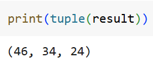

üîç
Advanced Functions
●
map()
The
map() function applies a given function to all the items in an iterable and returns a map object.
You can convert the map object to a list or a tuple using list() or tuple() functions respectively.
This is useful in transforming the elements of an iterable without the help of loops.
Let’s see how we can use the
map() function with tuples and lists.
Tuples

The map() function applies the lambda function lambda y: y + 10 to each element in the tuple tup, adding 10 to each element.
The result is a map object, which can be converted into a tuple to see transformed values.
List
The map() function applies the lambda function lambda x: x.lower() to each element in new_list, converting each string to lowercase.
The result is a map object, which can be converted into a list to view the transformed values.
●
filter()
The
filter() function in Python is used to filter elements from an iterable (like a list, tuple, or set) based on a specified condition.
It returns a filter object which can be converted to a list or tuple using
list() or
tuple() functions respectively.
It is often used with lambda functions for concise filtering logic.
Let’s see how we can use the
filter() function with tuples and lists.
Tuples
The filter() function applies the lambda function, lambda x: x > 20 to each element in tup, returning only the elements greater than 20.
The result is a filter object, which can be converted into a tuple to view the filtered values.
List
The filter() function applies the lambda function, lambda item: 'n' in item to each element in new_list, returning only the elements that contain the letter 'n'.
The result is a filter object, which can be converted into a list to view the filtered values.
If the map function is used instead, the results would look like this:
In this case, the map() function applies the lambda function, lambda item: 'n' in item to each element in new_list.
This checks whether the letter 'n' is present in each item and returns True or False for each element.
The result is a map object, which is then converted into a list and printed, showing a list of boolean values.
Until now, we’ve seen how
map() and
filter() are useful for applying functions, especially lambda functions, to iterables.
These functions allow us to transform or filter elements based on a condition or operation.
However,
zip() is a bit different. Unlike
map() and
filter(), which require a function (like lambda) to operate on the elements,
zip() doesn’t need any extra functions.
●
zip()
The
zip() function in Python takes multiple iterables and pairs their elements based on their positions.
It returns a zip object of tuples, where each tuple contains one element from each iterable.
This zip object can be converted into a list or tuple using the
list() or
tuple() functions, respectively.
Let’s see how we can use the
zip() function with tuples and lists.
Tuples

List
Now it's time for you to implement these concepts at your end!